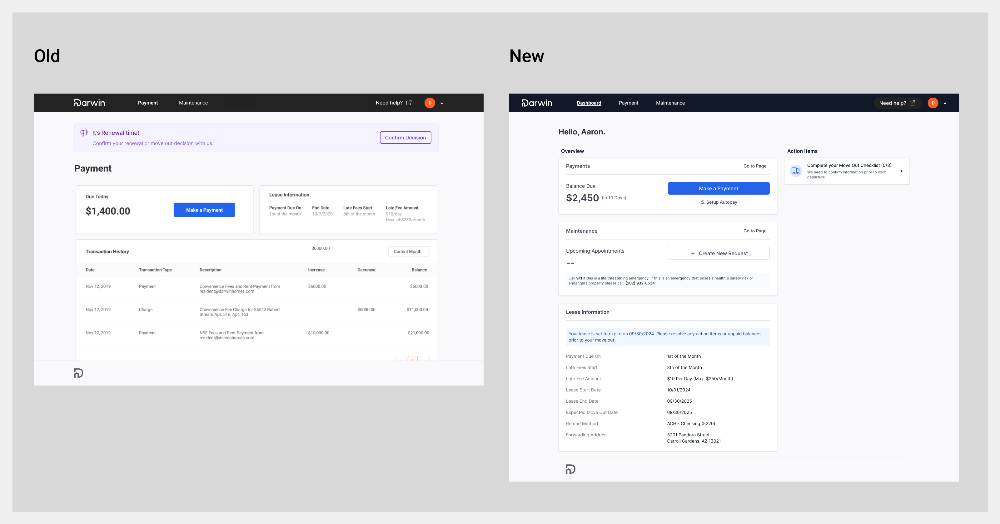
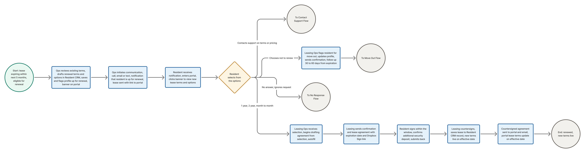
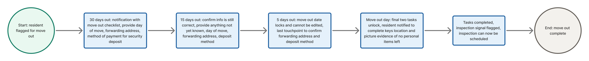
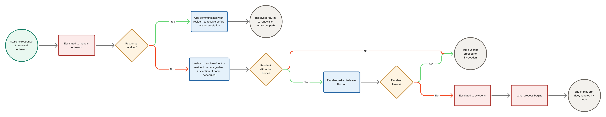
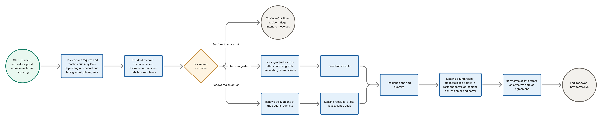
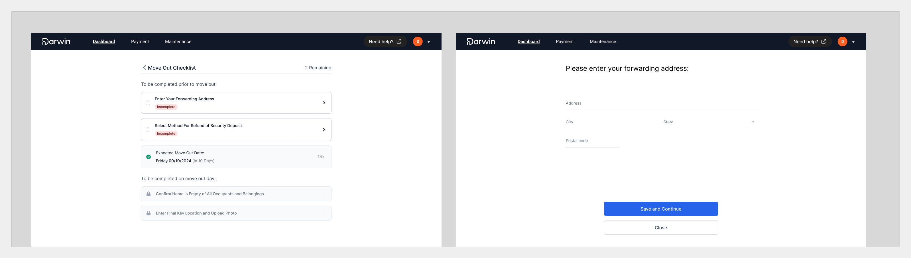
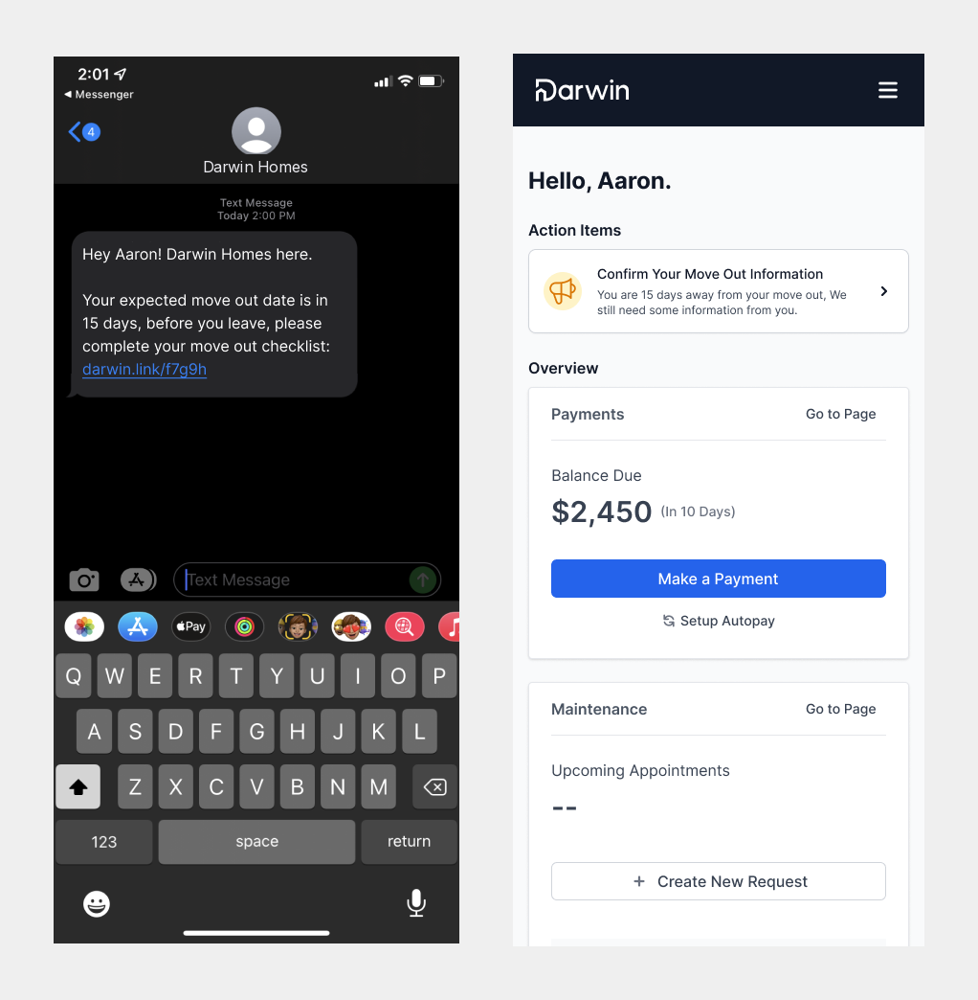
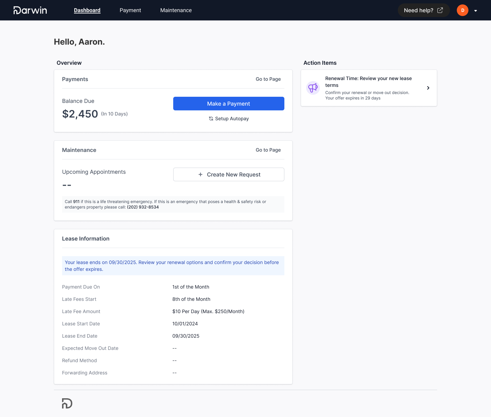
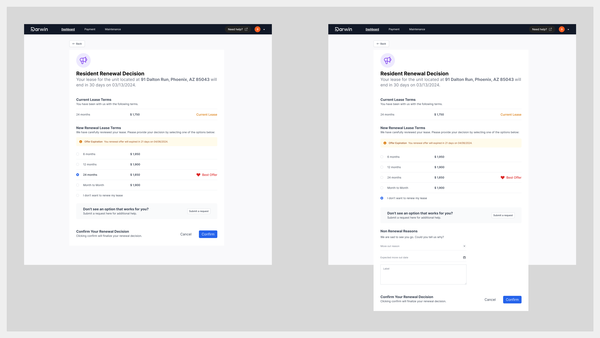

Outcomes
Ops stopped chasing every resident and started intervening only when someone was unresponsive or information was incomplete. The sharper end-of-flow signal also meant inspectors stopped being scheduled for homes that hadn't actually been vacated.
Context: the most manual moment in the operation
Lease renewals were one of the main stopgaps Darwin's Ops team handled by hand. Outreach kicked off three to five months before a lease expired: track the expirations, contact the resident, share the new lease and rate, answer questions, and find out whether they planned to renew or move out, and when. Around that main path sat every other branch: month to month, shortening or extending a term, setting rates for each, and when it went wrong, collections into evictions.
If a resident didn't respond, Ops scheduled a follow-up a week out and kept the thread alive by memory: who they'd engaged, where each one stood, and which new expirations needed the process started. Move-outs were heavier still, with keys, the day of the move, and the condition of the home all needing confirmation as the lease end approached. It was a lot of volume, held together by the team's attention.
The platform move: giving resident actions a home
Working with engineering on where any of this could live, I kept hitting the same wall: the portal had no dedicated place for resident notifications or actions at all. Serving a renewal notification into that vacuum would bury it.
The renewal notification had nowhere to live. That gap became the case for a resident dashboard: one place for maintenance requests, payments, lease information, and support, and the natural home for everything this flow needed to say.
I recommended building that section, and the engineering lead saw the value and committed resources to it. The dashboard shipped as the foundation this project sat on, and it became the front door the rest of the resident experience now runs through.

Mapping the flow before drawing it
With the senior designer I built a flow map of the whole end-of-lease period: the triggers, every required touchpoint between Ops and the resident, and exactly where the renew-or-move-out decision sat. We reviewed the move-out paths with the PM, and where we had open questions about the real frequency and timing of outreach, we took them to the Leasing Ops leads instead of guessing.
Ops surfaced the requirements that shaped the design. Because automation would absorb touchpoints they used to own, they needed visibility into each resident's progress from move-out decision to day of move. Security deposits had to support every return method: a check to a forwarding address, or direct deposit to an existing connected bank account or a new one. And two things could only be confirmed on the day itself: where the keys were left, and a photo of the space confirming it was clear of personal items.
The original working boards stayed behind at Darwin, so I rebuilt the flows cleanly in FigJam. Click any diagram to view it at full size.




The move-out checklist: four touchpoints, progressively locked
Our first iteration, built from what Ops taught us, was a four-touchpoint cadence. Each one sent email and SMS with a link into the resident's move-out checklist:
- 30 days out: first contact. The checklist opens, asking for the day of the move, a forwarding address, and how they want their security deposit returned.
- 15 days out: confirm what's there, fill in what wasn't known yet. Tasks were deliberately flexible: residents could give the information they had and come back for the rest, like a forwarding address they didn't have yet.
- 5 days out: the move-out date locks and can no longer be edited. Last confirmation before the day.
- Day of move: the final two tasks, visible but locked until now, unlock: where the keys are, and the photo of the cleared space.
With the paths agreed, I drafted the screens: what each state looked like, the interaction model, how a resident entered from a notification, and how they could navigate based on what they knew or didn't know in that moment. The checklist met people where they were instead of demanding everything at once.


The Renewal Signing Path
The signing flow itself was shorter, and it was led by the senior designer I oversaw. Ops initiates the lease draft and gets a form prepopulated from the resident's previous lease, where they set the term options and monthly rent, and where Ops retains the right not to renew, which routes the resident down the move-out path instead. The resident gets the term options as a portal notification and has 30 days to decide. Their choice comes back to the leasing team, who draft the renewal agreement and send it through Dropbox Sign, reachable from both the portal and email. Signed, countersigned by Ops, copy delivered, active on the renewal date.


Directing that work surfaced a leadership moment I'd point to: the senior designer had room to be creative, and early on he kept inventing components and sizes that already existed in our design system. I was good at catching it visually, and every comment pointed to the component we already had rather than just flagging the deviation. Over time the new-component count in his mocks fell to almost nothing, because he'd learned the library, not because I was policing it.
Engineering in the room from day one
This was one of the projects where I brought engineering in as early as possible. Concepts got reviewed at standup; more polished passes went over as annotated files; early thinking got walked through as rough flows. Engineers would sit with it, then ping me in Slack or grab an ad-hoc call about an interaction I hadn't accounted for. We kept a dedicated design-eng Slack group for exactly that traffic, and I added engineers as optional to the Ops calls, summarizing findings at standup for anyone who couldn't make it. By the time screens were final, nothing in them was a surprise.
Impact, on the honest basis
The reductions above, 29% on renewals outreach volume and 18% on move-out outreach, are the numbers reported after release; I no longer have the dashboards behind them. What I can say structurally: Ops moved from owning every touchpoint to handling exceptions, and the completed checklist gave vendor management a definitive inspection-ready signal, replacing the wait-and-see scheduling that had been sending inspectors to homes that weren't empty yet.
The goal was never to remove Ops from the relationship. It was to spend their attention where a human matters: the unresponsive resident, the incomplete answer, the exception.